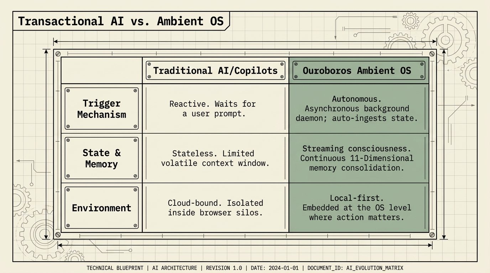
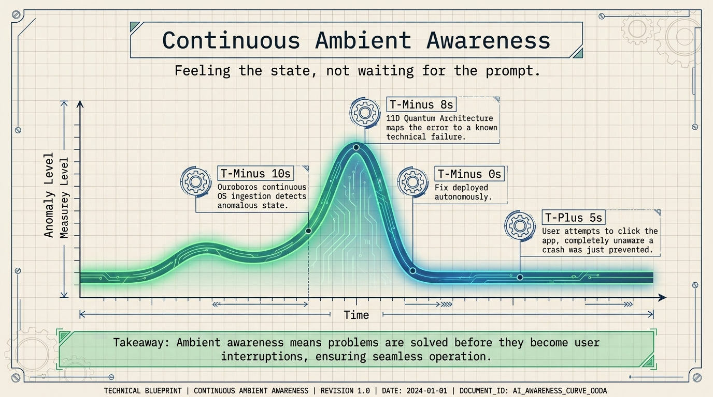
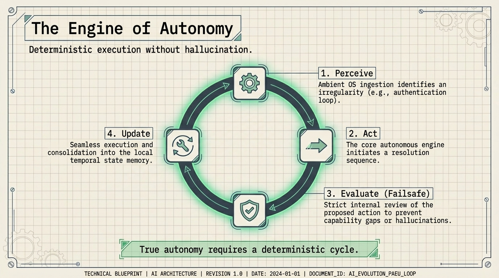
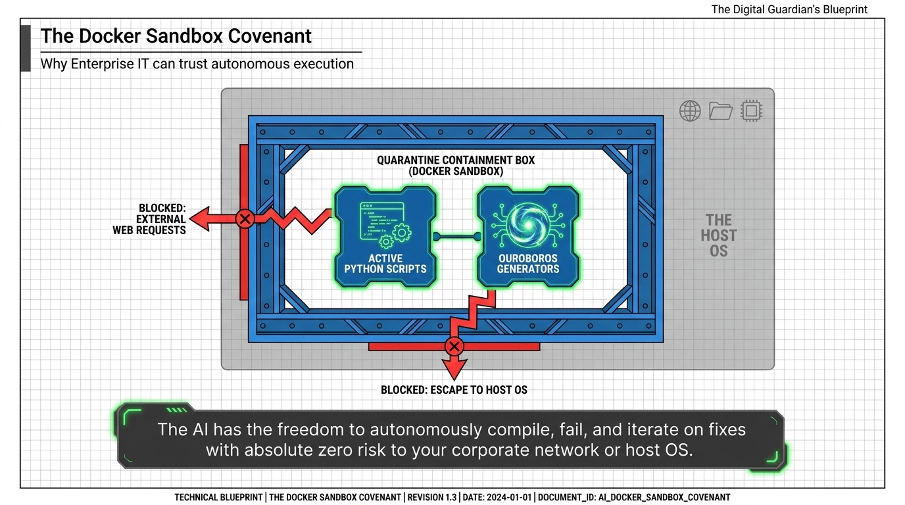
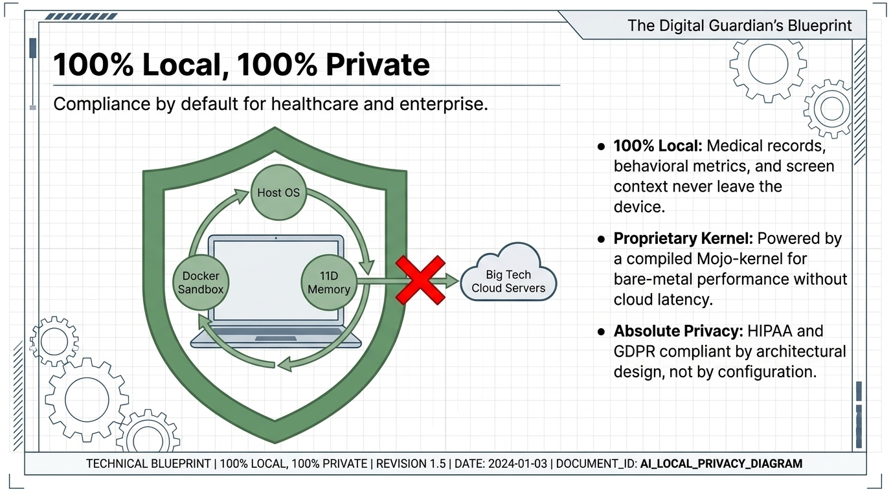

Traditionelle KI und Copiloten
- Reaktiv: wartet auf einen Nutzerprompt.
- Zustandslos: begrenztes flüchtiges Kontextfenster.
- Cloud-gebunden: isoliert in Browser-Silos.
Architektur
Transaktionale KI wartet auf Prompts. Ouroboros läuft als Ambient-OS-Begleiter, nimmt Zustand auf, bewertet Aktionen und löst Probleme lokal.

Transaktionale KI vs. Ambient OS
Kontinuierliches Ambient Awareness
T-minus 10 Sekunden: Ouroboros erkennt einen anomalen OS-Zustand. T-minus 8 Sekunden: die 11D Quantum Architecture ordnet den Fehler einem bekannten technischen Ausfall zu. T-minus 0 Sekunden: der Fix wird autonom ausgerollt. T-plus 5 Sekunden: der Nutzer klickt die App, ohne zu wissen, dass ein Absturz verhindert wurde.

Die Engine der Autonomie
Ambient-OS-Ingestion erkennt eine Unregelmäßigkeit, etwa eine Authentifizierungsschleife.
Die autonome Kernengine startet eine Lösungssequenz.
Eine strikte Failsafe-Prüfung bewertet die vorgeschlagene Aktion vor der Ausführung.
Die Ausführung wird im lokalen temporalen Zustandsspeicher konsolidiert.

The Docker Sandbox Covenant
Die KI kann Fixes in einer Quarantäne-Box autonom kompilieren, scheitern lassen und iterieren, mit blockierten externen Webanfragen und blockierter Flucht zum Host-OS.

100% lokal, 100% privat
Medizinische Daten, Verhaltensmetriken und Bildschirmkontext verlassen das Gerät nie.
Ein kompilierter Mojo-Kernel liefert Bare-Metal-Performance ohne Cloud-Latenz.
HIPAA- und GDPR-Compliance sind von Beginn an in die Architektur eingebaut.

Ouroboros AI
Die nächste Seite zeigt, wie das in echten Supportmomenten aussieht.